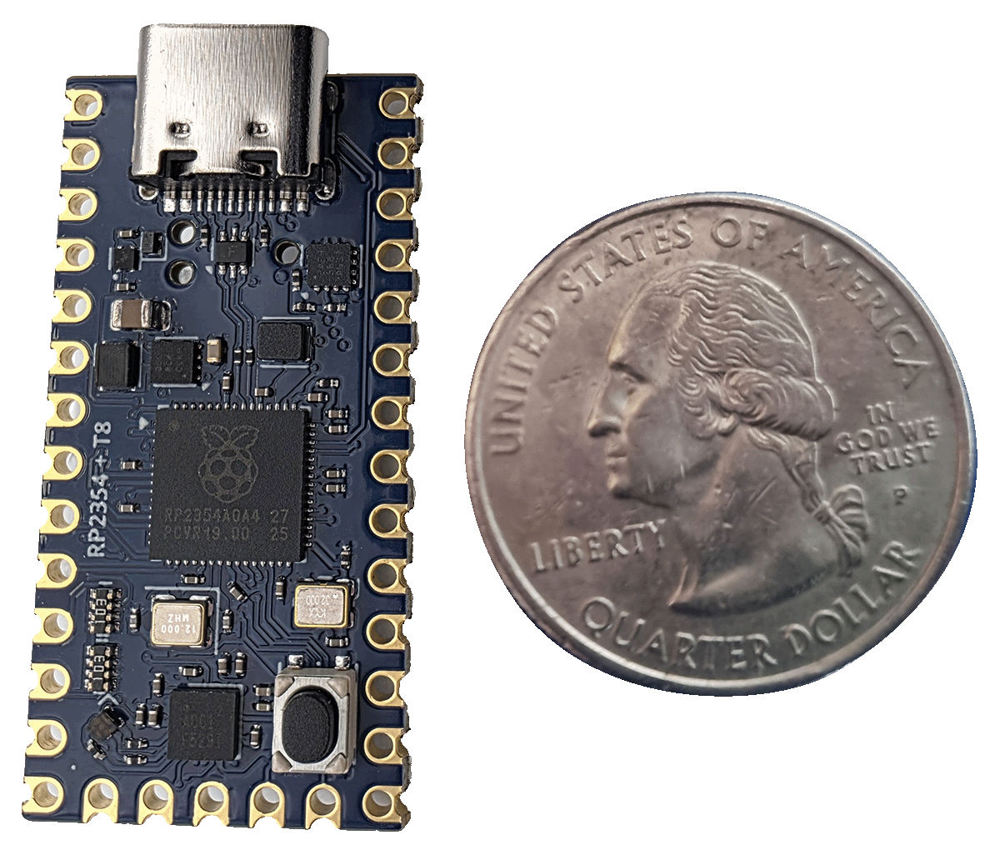
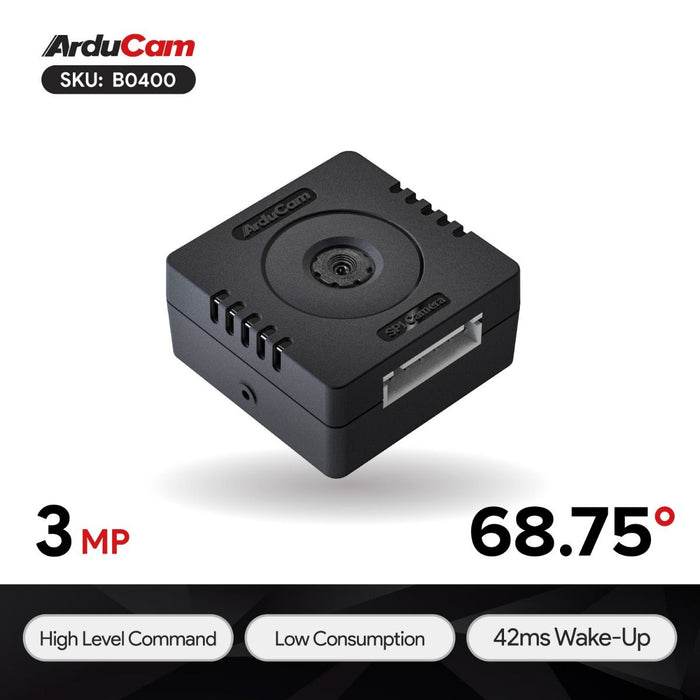

fpga-open-vocab：
50ドルのFPGAボードで画像認識
- 00自己紹介2分
- 01プロジェクトの概要4分
- 02モデルとハードウェア12分
- 03システム構成11分
- 04推論の高速化7分
- 05埋め込みから判定へ7分
- 06実装で分かったこと5分
- 07まとめとQ&A2分

- AI開発に関する講演、デモ、サンプルコードの作成を担当
- fpga-open-vocabは、クラウドでの推論を使わず、MCUとFPGAで画像認識を行う個人プロジェクト
- FPGAオーディオシンセサイザーのプロジェクト：
github.com/kazunori279/xls32-fpga-synth

画像推論を実行するForgixボード。
硬貨はメーカー写真のサイズ比較用です。

デモの画像入力に使うカメラ（B0400）。
SPI接続でRP2354Aに画像を送ります。
通常の物体検出モデルと異なり、「開いた本」などの自由文でシーンを指定できます。
テキストと参照シーンを変えるだけで、画像モデルの再学習は不要。
画像の推論はボード内で完結。
クラウド通信・フレームごとの課金なし。
MCU＋FPGAボード。
低いハードウェア費用で試作。
FPGAの画像エンコード：265 ms
MCUのCPU単体では1,583 ms。
モデル蒸留・量子化・ファームウェア・FPGAデジタル回路設計（RTL）
人が方針を決め、実機で検証。
価格はボード単体（カメラ・ホスト別）。速度比5.97倍：同一モデル、MCUクロック320 MHzで比較。
カメラ映像からシーンを分類する装置です。「開いた本」と「閉じた本」などを指定し、設置環境でそれぞれの例を登録します。
- 140万パラメータを主にint4で保持し、容量は768 KB。1フレームあたり1億5,900万回の積和演算（MAC）
- 約50ドルのForgixボードにRP2354Aマイコン（MCU）とEfinix Trion T8 FPGAを搭載
- 8層すべての畳み込みにFPGAアクセラレータを使用
- エンコーダは265 ms。カメラ1フレームは処理時間の合計で282 ms、全体の実測で293 ms
- 同じ320 MHzのMCU単体に比べ5.97倍高速。出力512個の浮動小数点数はC参照実装とビット単位で一致
画像推論はボード内で実行し、結果をRGB LEDに表示します。ホストはテキストのエンコードと初期設定を担当します。
# 4つのテキストクエリと比較 uv run host/demo.py "cup" "person" "book" "laptop" # 2種類のシーンの例を登録 uv run --script host/spot.py \ "an opened book" "a closed book"
LED：色と明るさの意味は動作モードによって異なります。登録後は参照との比較で判定します。未登録モードは後半で説明します。
コンソール：各フレームのコサイン類似度、部屋を基準にしたzスコア、選択したクエリ、処理時間を表示します。
クエリの変更：モデルを書き換えずにテキストベクトルを更新できます。背景の補正値もリセットするため、空のシーンから始めます。
評価：正解のシーンを記録した試験で正解率を測ります。LEDが変化するだけでは、判定の正しさは分かりません。
画像のエンコードはボードで実行両エンコーダは共通の埋め込み空間にベクトルを出力します。テキストベクトルはクエリを変えたときだけ、画像ベクトルは毎フレーム必要です。そのため、大きなテキストモデルをボードに載せずに運用できます。
CLIP（OpenAI、2021年）がこの方式を提案しました。現在の教師モデルは、sigmoidベースの損失関数を使うSigLIP 2 SO400Mです。
生徒モデルは、同じ画像に対する教師の512次元への射影後の出力を近似します。これにより、教師のテキストベクトルと比較できます。
140万パラメータ、159 MMAC、3×3畳み込み8段。設計上限は150万パラメータ、250 MMACです。
初期の生徒モデルは、教師が正解したクエリの94%を保持しました。現在の教師とint4モデルでは91%です。
これは評価タスクでの性能保持率です。新しい部屋での装置の正解率を示す値ではありません。
教師をCLIP ViT-B/16からSigLIP 2 SO400Mに変更しました。固定した主成分分析（PCA）の射影で1152次元を512次元に縮小します。
異なる空間でも次元数が同じなら数値は計算できてしまいます。export.jsonで空間を識別し、重みのCRC32照合でボード上のモデルの取り違えを検出します。
ロジックエレメント（LE）はルックアップテーブルとレジスタを含みます。専用乗算器とブロックRAMが演算と記憶を担います。
ビットストリームで回路を構成します。このアクセラレータでは、制御回路が演算器の並列動作を管理します。
畳み込みは多数の積和演算からなります。このタイルは、データを供給できれば1クロックあたり16 MACを実行します。
整数演算なのでC参照実装と厳密に比較できます。中間の累積値と最終的な埋め込みの両方を検証します。
7,384 LE、18×18乗算器8個、5 kbit RAM 24個を搭載。FPGA内のメモリは合計15.4 KBです。
現在の設計は6,265 LE（85%）、乗算器8個すべて、メモリ21ブロック（88%）を使用。ロジックとメモリの両方が拡張の制約になります。
| 仕様 | 設計への影響 | |
|---|---|---|
| MCU | RP2354A — Cortex-M33 × 2、SRAM 520 KB、積層フラッシュ 2 MB | モデルの重みとFPGAビットストリームがMCUのフラッシュに収まります。外部のモデル保存先は不要です。 |
| FPGA | Efinix Trion T8F49 — 7,384 LE、ハード乗算器8個、BRAM 15.4 KB | LEの85%、乗算器8/8個、RAM 21/24ブロックを使用します。 |
| リンク | 行き3ビット、帰り1ビット。実測で往路26.4 MB/s、復路8.9 MB/s | 利用可能なピンがバス幅を制約します。入力データ量が結果の返送量を上回る構成です。 |
| クロック | システム320 MHz / リンク160 MHzでビット単位一致。332 MHzは10 ms速いものの、現行設計は340 MHzで応答しなくなります。 | link_clk = sys_clk / 2。MCUがFPGAにクロックを供給するため、リンクの高速化は演算も高速化します。 |
| カメラ | ArduCam Mega 3MP、SPI接続。ヘッダへ6本 | ネイティブ128 × 128の撮影と学習時の切り出し方を比較した際の平均AUC低下は0.001でした。 |
| 出力 | RGB LED 1個と、シリアルログ | LEDに結果を表示し、USBシリアルにスコアと診断ログを出力します。 |
| 価格 | 約50ドル。既製のボード1枚 | 画像推論にGPUやネットワークサービスを使いません。 |
クエリ変更時にテキストエンコーダを実行し、512次元ベクトルをUSBで転送します。起動時にはFPGAビットストリームも読み込みます。
モデルの学習、量子化、エクスポートもボード外で行います。
PIO（プログラマブルI/O）とDMA（直接メモリアクセス）で転送を制御。コマンドを準備し、返送データを検証します。
PIOがトランザクション中のFPGAクロックを供給します。演算に必要なクロックもここから生成します。
次のブロックの重みと入力データを準備し、結果を活性値バッファへ書き戻します。2本のロックフリー・リングバッファでコア間を連携します。
現行の270 msベンチマークではコア1の処理は149 ms。大半を通信と並行して実行し、コア0の待ち時間は5 msです。
int32の途中結果を2,048個保持。1クロックあたり16 MAC。専用乗算器8個とロジックで構成した乗算器8個を使います。
int4重みの展開と出力の再量子化も行います。MCUがブロックごとに演算データを供給します。
3 × 3の位置と入力チャネル全体の積を、広い累積器で加算します。
in_scaleで割って丸め、±127に制限します。符号付き入力を使うのはconv0だけです。畳み込み層全体はFPGAのメモリに収まりません。MCUが収まる大きさのブロックに分割し、順に転送します。
- 1ブロックで最大2,048個のint32累積器と2 KBの入力領域を使用
- 1フレームを174ブロックに分割し、チャネル・カーネルのグループを1,856パスで処理。通信は6,264トランザクション
ACT：入力を送る。WGT：重みを送る。RUN：計算する。DRAIN：結果を読む
モデルの重みはすべてMCUのフラッシュに保存します。各ブロックで必要な重みだけをFPGAへ転送します。
タイル内で出力を1バイトに再量子化してからDRAINで返送できます。M15の試験では返送時間が153 msから41 msに短縮しました。
- ピン配置の確認：MCUにつながるヘッダピンは6本。GPIO 13本は未接続で、利用可能な連続ピンは最大3本
- 返送経路：使えるのはGPIO6のみ。GPIO5は
CDONE、GPIO7はパッケージに端子なし - クロック用ジャンパ：FPGAのクロック対応ピンへ接続を移し、3本目のデータ線を確保
- 実測転送速度：FPGAへ26.4 MB/s、MCUへ8.9 MB/s
アクセラレータは重みと入力活性値を受け取り、より小さい結果を返します。この処理には非対称なリンクが適しています。
MCUは転送だけでなく演算用のクロックも供給します。リンククロックを上げると、通信と演算の両方が速くなります。
| 信号 | ビット | レート |
|---|---|---|
| MCU → FPGA | 3 | 26.4 MB/s |
| FPGA → MCU | 1 | 8.9 MB/s |
| クロック | 1 | PIOのside-set — タイルのクロック源はMCUだけ |

a5 5aに続き、コマンドと16ビットの長さを送ります。受信側はこの開始パターンを探して同期を回復します。
受信回路はヘッダ、データ、実行、応答、チェックサムを7状態で処理します。RUNにはデータがなく、計算終了を待ちます。
往復のデータをCRCで検証し、ステータスバイトでコマンド結果を返します。試験では出力512個すべてをC参照実装とも比較します。
| マイルストーン | 変えたこと | フレーム | MCU比 |
|---|---|---|---|
| ベースライン | 最適化した生徒モデルをMCU単体で実行 | 3,359 ms | 1.00× |
| M7c | 8層すべての畳み込みを174ブロックに分けてFPGAで処理 | 2,164 ms | 1.62× |
| M7d | DMA転送とハードウェアによるCRC計算 | 1,481 ms | 2.35× |
| M7e | 重みの準備と活性値の書き戻しをコア1へ移動 | 1,292 ms | 2.71× |
| M7f/g | 2本の処理キュー、主要コードのSRAM配置、3ビットリンク | 975 ms | 3.54× |
| M7h/i | 重み準備のキャッシュと丸め・範囲制限の高速化 | 851 ms | 3.94× |
| M14 | int4で重みを転送し、1バイトに2個を格納 | 798 ms | 4.32× |
| M15 | FPGAで再量子化し、出力を4バイトから1バイトへ削減 | 631 ms | 5.46× |
| M16 | カーネル要素を並列化し、走査回数を9回から6回へ削減 | 569 ms | 6.05× |
| クロック | システム320 MHz / リンク160 MHzへクロックを引き上げ | 270 ms | 12.76× |
1バイトに符号付き4ビット重みを2個格納します。タイルは下位4ビットから読み、8ビットへ符号拡張してwbufに保存します。
重みバッファの幅と乗算器の入力形式は変わりません。数値を変えずに転送サイズだけを小さくします。
既存の乗算器で同じ積を計算できます。パックした転送と通常の転送を、同じ期待値で検証します。
cfg_w4でブロックごとに重み幅を切り替えます。各層の幅は出力したモデルが指定するため、同じビットストリームで両形式を処理できます。
1フレームの重み転送量は2,230,272から1,142,784バイトへ。転送クロック数は666万から376万へ減りました。
他のコマンドは変わりません。1,087,488バイトの削減に対し290万クロック減少し、8ビットを3本のデータ線で送る計算と一致します。
- M7d：563 msのCPU処理がDMA転送の時間外に残った
- M7e：コア1への処理移動で193 ms短縮、予測は380 ms。一部の処理は元からDMAと並行していた
- M7f：コア0から157 msを削減しても、FIFO待ちの増加により全体の短縮は59 ms
- 3ビットリンク：転送は286 ms短縮したが、当初はフレーム時間が変わらず。他の制約を解消後に165 ms短縮
- M10：約450 msと見込んだボトルネックが実測32 msだったため、最適化案を中止
- M7i：コア0を待たせるキューで84 ms削減すると、その79%がフレーム時間の短縮につながった
- M16：同じ1,630万FPGAクロックの削減でも、リンク構成により予想した全体短縮の100%または66%を達成
- 待ち時間がクリティカルパスを決めます。ある測定では重みの準備が82 msでも、コア0の待ちは約20 msでした。82 msすべてを削除しても、フレームが82 ms短くなるわけではありません。
動作上限とは限らない初期の試験はシステム150 MHz / リンク75 MHzから始め、失敗したときだけクロックを下げていました。これでは高い周波数を試していません。後から上方向も測定すると、システム280 MHz / リンク140 MHzで3回の起動すべてがビット単位で一致しました。上限を判断するには、動作する周波数と失敗する周波数の両方を測る必要があります。
リンク周波数39〜41 MHzと122〜130 MHzで失敗しました。3回の起動で両方の帯域を再現しています。
帯域中心の間隔は約86 MHz。信号の往復タイミングモデルから、この間隔に対応する遅延を11.7 nsと推定しました。
各帯域を別々にモデルへ当てはめると、セットアップ／ホールド時間幅は0.73 nsと0.83 nsでした。オシロスコープによる直接測定ではなく、モデルからの推定です。
コア電圧を上げると、帯域は0.05 Vあたり約1 MHz高い側へ移りました。伝搬遅延が小さくなる説明と整合します。
m6診断試験は、コア電圧1.30 Vでシステム344 MHz / リンク172 MHzまで動作。348 MHzではMCUが停止しました。
この上限は実アプリには適用できません。現行アプリは320 MHz、1.25 Vを採用し、340 MHzではリンクが応答しなくなります。
コサイン類似度は、そのままでは判定用に補正されたスコアではありません。クエリ固有の偏り、背景の影響、時間とともに変化するドリフトがありました。
- クエリ固有の偏り：コサイン0.27が、あるフレーズには高く、別のフレーズには低い値になる
- 背景の影響：ノートPCがない5種類の試験シーンすべてで、
laptopが首位になった - 時間変化：静止した500フレームで、4つのクエリが4分間に約1.5 zスコアずつ同時に低下した
設置環境での補正：空のシーンで各クエリのスコアを測り、その背景からの変化として表します。背景の偏りは減らせますが、すべてのドリフトを除去するわけではありません。
// スコアはコサインではない z[i] = (cos[i] − qbg[i]) / bg_spread(i);
qbgは背景のコサインの平均、bg_spreadは下限付きの標準偏差です。最初の空シーン30フレームで推定し、その後は固定します。| 背景統計 | 効果 |
|---|---|
| 固定（既定） | 置いたままの物体も、初期の背景との差として残ります。 |
| 継続更新 | 静止した物体が徐々に背景へ取り込まれます。 |
level = mean(z) // クエリに共通する成分 c[i] = z[i] − level // 中心化したスコア
状態の分類：クエリ間の平均を引きます。全クエリに同じ量だけ加わる変化を除去し、得られたベクトルc[]を登録クラスの参照と比較します。
記録済みの2回の試験では、状態ルールの変更により正解率が44.2%から84.2%、87.5%から95.8%に改善しました。
存在の判定：levelには共通のドリフトが残るため、判定には不向きでした。現在は最も近いクラスまでの距離と、空シーンの参照までの距離を比較します。
クラスを登録：対象のシーンを見せて、対応する1〜6を押します。ボードがc[]を20フレーム平均します。
物体を置き直して、同じキーで再登録。2回の提示で配置の変化を取り込み、1つのクラス参照を作ります。空のシーンは0で登録します。
| 平均フレーム数 | 1 | 5 | 12 | 16 | 20 |
|---|---|---|---|---|---|
| 評価正解率（%） | 90.0 | 89.2 | 96.7 | 99.2 | 100.0 % |
存在を判定：最も近い物体の参照を探し、それが空シーンの参照より近ければ「存在する」とします。空の参照はこの判定に使い、物体ラベルの候補には含めません。
// d = 最も近いクラスまで、de = 空の参照まで
present = (de > d);
| 存在判定ルール | 平均バランス正解率 |
|---|---|
| 最近傍参照（現行） | 79.4 % |
| 正解に合わせた最適半径 | 73.7 % |
| 距離範囲（代替ルール） | 53.8 % |
| ルール | 40回の平均 | 本の33回の平均 | 本の33回の最低値 |
|---|---|---|---|
| 参照を登録 | 68.9% | 69.2% | 0.8% |
| 登録せず最大zスコアを選択 | 62.7% | 64.1% | 26.0% |
| 正解を見て選んだ最良の境界 | 83.3% | 85.8% | 52.0% |
登録は平均を改善しますが、すべての試験で有利ではありません。本の33試験では平均5.1ポイント改善しました。参照が近すぎたり、順序が逆転したりすると、正解率が下がる場合があります。
空のフレームは除外しています。最良の境界の行は、各試験の正解を見て境界を選んだ診断用の値です。そのまま運用できる方式ではありません。
uv run --script host/spot.py \
"an opened book" "a closed book"
>>> Show it: an opened book. Visit 1 of 2 press Enter when the scene is right key : pressed '1' enrol : an opened book, level +1.07, scatter 0.14 (20 frames, visit 1 of 2) ... frame 148 an opened book by 1.90 frame 149 the empty scene frame 150 something else
動作：約1分の登録後、約3.5フレーム/秒で判定します。クエリを変えたときは背景の補正をやり直します。
現在の装置の制約：
- 環境に依存：登録した部屋と照明でのシーンを見分ける方式
- 画像ごとに判定1つ：物体の枠は出さず、個数の認識も未検証
- 対象の組に依存：連続した4試験の正解率は95.8 / 90.8 / 50.0 / 34.2%
- 表現にも依存：ある評価では「an empty glass」が正解のフレームでも、そのクエリが勝った割合は6.7%
- 登録時の統計値だけでは品質を保証できない：提案した品質しきい値は8回の事前予測試験で裏付けられなかった
| 対象 | 観察 |
|---|---|
| 手の開閉 / 赤・緑のキューブ | 提示した状態に合わせてLEDの色が変化 |
| 箱の開閉 | テキストベクトルの差を使うクエリは、開いた箱にも「closed」を選択 |
| カップ1個 / 2個 | スコアは分かれたが、一方の状態で特に強く反応 |
--stateでフレーズを比較する状態として指定します。「a hand」などの別のゲートクエリで存在を判定。このモードではLEDの色が状態、明るさがゲートのスコアを表します。
登録も役割指定もない場合、LEDの明るさは固定で、色はマッチの強さを示します。選ばれたクラスを色で識別する表示ではありません。
| 状態の組 | 元画像 /6 | 画質変動の最悪値 /6 | 空の参照を追加 /6 |
|---|---|---|---|
| タオル：畳む / 丸める | 6 | 5 | 3 |
| マグ：直立 / 横倒し | 6 | 5 | 6 |
| バナナ：皮あり / 皮なし | 5 | 3 | 4 |
| 眼鏡：開く / 畳む | 4 | 4 | 3 |
| トレー：鍵 / 財布 | 3 | 3 | 3 |
| バジル：直立 / しおれる | 2 | 2 | 2 |
| 対照：開いた手 / 拳 | 5 | 3 | 4 |
次の実機試験の候補はタオルとマグ。各行は、1つの生成シーンから得た似た画像6枚の評価です。最終列は空の参照を加えた後の物体画像の正解数で、空シーンの検出率ではありません。
照明ごとに参照を登録しています。実機の背景補正や時系列処理は再現していません。
rtl/mk_peri.pyでインターフェース記述から生成します。0x…と0X…を比較し、同じ重みを拒否していました。4つのオフライン試験は不一致だけを検証。一致する正常系の試験も必要でした。- 演算時間と待ち時間を測ります。変更後と基準の処理は同じ起動中に比較し、クロック条件も明記します。
- ある周波数での成功は、その設定だけを確認したものです。上下の周波数も試し、診断用ベンチマークと実アプリを区別します。
- 周波数を細かく変えて失敗帯域の端を調べます。原因の説明は、追加試験で裏付けるまでは仮説として扱います。
- ベクトルの次元数が同じでも、埋め込みの互換性は保証されません。モデルと射影の識別情報を残し、デバイス上の重みも照合します。
- テキストはホストで、画像はMCUとFPGAでエンコードする
- 140万パラメータの生徒は、評価タスクで教師が正解したクエリの91%を保持
- FPGAはRAM 24ブロック中21、ロジックエレメントの85%を使用
- エンコーダは265 ms、カメラの実測フレーム間隔は293 ms
- 同じ320 MHzのMCU単体に比べ、エンコーダは5.97倍高速
- シーン登録は平均正解率を改善するが、対象の組と設置環境に強く依存
- 登録に使わないシーンで、状態の正解率と空シーンの判定を両方評価する
README.md：プロジェクトの現状と使い始める手順docs/architecture.md：モデル、ハードウェア、実行制御、判定ルールdocs/building.md：ビルドツール、書き込み、試験プログラムdocs/history.md：設計の変更履歴と過去の実装から得た知見docs/monitor.md：シーンの変化を監視する装置としての使い方docs/fit.md：想定する用途に適するかを評価する方法
docs/milestones.md：開発段階M0〜M21と、その時点での測定記録docs/bring-up-log.md：日付付きの実機試験、発見、その後の訂正
- CLIP：arxiv.org/abs/2103.00020。現在の教師モデル：SigLIP 2 SO400M
- Forgix：forgix.tech。FPGA：Efinix Trion T8。MCU：Raspberry Pi RP2354A
- FPGAオーディオシンセサイザー：github.com/kazunori279/xls32-fpga-synth
ありがとうございました
ご質問をどうぞ